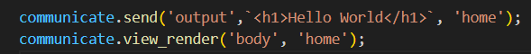
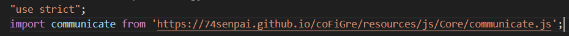

1. Create file and config
If you don't have Core in your workspace, you need to download it from my GitHub.
Now, let's create a new JavaScript file with any name. For example, I use core.js as the name you
create.
After creating the core.js file, you create another JS file to set HTML for the web. I will call it
the config.js file.
Now, let's do something:
- Step 1: Import
communicati from coFiGer
- Step 2: You call
communicati.send() and send your HTML code to "output". "Output" can save your
HTML code with a key name.

- Step 3: After sending data to "output", you need to remember the key of the data you sent and use
communication.view_render() to render the data you sent before.
- Step 4: Create an HTML file and import
core.js

Syntax
Logger
communicate.logger('type', 'location', ...'Something you need log');
type is the type of log.
location is the location of the logger you call.
Contact
communicate.contact('type');
type is the type you need to return from this object.
Example: If you want to get the output module, you need to call
communicate.contact('output'); and this will return the output object/class/...other.
Send
communication.send('accusive', data, 'key');
accusive is where the data is sent to.
data is everything.
key is the name of the key you want to store the data in.
Example: communication.send('output', "<h1>Home</h1>", 'home');
Now in output, you have data with key "home" and the data is <h1>Home</h1>.
View-Render
communicate.view_render(location, 'key');
location is where you can use innerHTML.
Example: Let's try to render 'home' into the body:
communicate.view_render('body', 'home');
Declare Action
communicate.declare_action('name-action', logic);
name-action is the name you want to call this action.
logic is a function that defines the action you want to perform when the action is called.
Example:
communicate.declare_action('viewHome', function() { alert('Home Page'); });
Action
communicate.action(default);
default is a boolean type. Choose true if you want to use the default name (handle) to call the
function you declared, or you can set this in a variable and call the variable name.
Example: communicate.action(true);
Now locally, you have the function handle.viewHome() that you can use in the config file with
events like onclick, etc.
Set Data LocalStore
communication.set_data_localStore(key, status);
key is the name of the key you want to declare and set into local storage.
status is a boolean type or other types that may save your status or data.
Example: communication.set_data_localStore('Read', true);
Now in local storage, you have a data_storage object with key "Read" and value "true".
Get Data Storage
communication.get_data_storage(key);
key is the name of the key you declared before. If you call a key you haven't declared before, this
key will be declared with a value of false and returned.
Example: communication.get_data_storage('Read'); returns true.
Request Data
communicate.request_data(accusative, type_dataRequest);
accusative is where you need to get data (output, store).
type_dataRequest is the type of data you save; it is the name key.
Unlogger
communicate.unlogger(type, location, isLock);
type is the type you want to return in the console.
location is where you want to block or unblock.
Example:
communicate.unlogger('log', 'output', true); - This will lock all console logs of type log from
output.
communicate.unlogger('log', 'output', false); - This will unlock all console logs of type log
from output.
communicate.unlogger('all', 'all', true); - This will lock all loggers from Core.